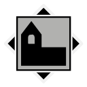

Map
Nearby locations
The 10 closest locations, measured in a straight line between the map markers (1 world unit is 1 metre), with the direction to go from here.
| Location | Kind | Region | Distance | Direction |
|---|---|---|---|---|
| Iboholmen Castle | Tourist attraction | Archipelago | 446 m | SE |
| Mörtnäs | Farm | Archipelago | 589 m | SW |
| Forest Worker's Barrack | Industry | Archipelago | 595 m | E |
 Källviken Källviken | Settlement | Archipelago | 722 m | SE |
| Abandoned Fishing Wharf | Tourist attraction | Archipelago | 760 m | SW |
 Iboholmen Church | Church | Archipelago | 887 m | E |
| Salthamn | Settlement | Archipelago | 1,021 m | SW |
| Björknäs | Farm | Archipelago | 1,267 m | NE |
| Björkvik Farm | Farm | Archipelago | 1,290 m | SW |
| Saltvallen IP | Tourist attraction | Archipelago | 1,295 m | SW |
Safehouse
There is a safehouse here: Stenhaga Farm (36 m from the location marker). Its house photo lies next to it.
Loot
The location's files list 95 loot crate spawn points. These are the crates your save counts for this location's loot progress.
Placed loot within 200 m that is closer to Stenhaga Farm than to any other location (from the interactive map's Extra Locations layer).
| Category | Count | Breakdown |
|---|---|---|
| Weapons | 1 | Q1 1 |
| Items | 16 | Simple First Aid Kit 5, Standard First Aid Kit 4, Emergency flare (Sticky) 2, Gasoline 2, Radio 2, Flashlight 1 |
| Crate spots (map layer) | 116 | Ammo boxes 40, Equipment boxes 39, Apparel packs 29, Weapon boxes 4, Car hoods 3, Machine wrecks 1 |
From the game files
Two crate numbers. The crate spawn points are the loot crate spawn points listed in the location files: what your save tracks for a location's loot progress. The crate spots (map layer) are every crate spot of the interactive map's loot layer within 200 m that is nearer to this location than to any other, whichever game file it comes from, so the two numbers rarely match. Neither means a crate is always there: the game may leave a spot empty.
Weapons, attachments and other single items placed here:
| Item | Quality | Count |
|---|---|---|
| 12G Pump-Action (Dilapidated) | Dilapidated | 1 |
Missions
Missions whose name, briefing or steps mention Stenhaga Farm.
| Mission | Type | Region | Summary |
|---|---|---|---|
| The Farm | Main | Archipelago | Follow the road to look for clues about the disappearance of Therese's grandparents |
| The Road to Salthamn | Main | Archipelago | Find your way to the village of Salthamn, and look for answers there. |
From the game files
Distances are straight lines on the map between marker positions. A location's area in the game is not a circle, so the 300 m and 200 m radii on this page are a practical approximation, not the game's own borders.